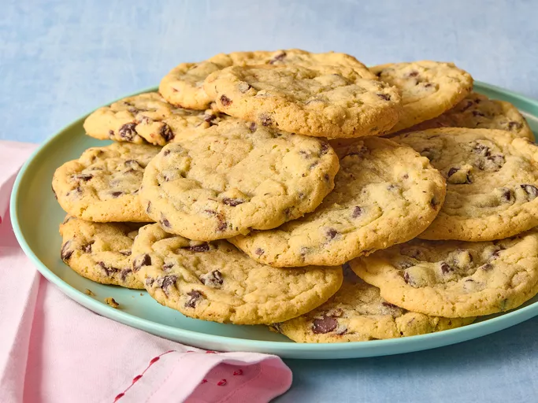

Back
How to make Chocolate-chip cookies
After years of tweaking my chocolate chip recipe, it is now ready for public consumption. It has been laboratory-tested on many of my friends, all of whom seem to think it's pretty great, as do I. They certainly aren't healthy, but they're well worth the requisite post-cookie-eating cardio workout. I hope the recipe works for you as well as it has for me. Enjoy!
Ingredients
- 3 ½ cups all-purpose flour
- 1 teaspoon baking powder
- 1 teaspoon baking soda
- 1 teaspoon salt
- 1 cup butter, softened
- 2 cups brown sugar
- 6 tablespoons white sugar
- 2 eggs
- 4 teaspoons vanilla extract
- 1 (12 ounce) bag chocolate chips
Directions
- Gather all ingredients. Preheat the oven to 300 degrees F (150 degrees C)
- Gently mix the flour, baking powder, baking soda, and salt with a fork in a bowl. Set aside.
- Beat the butter, brown sugar, and white sugar with an electric mixer in a large bowl until smooth. Add the eggs one at a time, allowing each egg to blend into the butter mixture before adding the next. Beat in the vanilla with the last egg.
- Mix in the flour mixture until just incorporated. Fold in the chocolate chips, mixing just enough to evenly combine.
- Divide the dough into 24 3-tablespoon-sized balls. Flatten the balls to about 1/4-inch thick onto a baking sheet.
- Bake in the preheated oven until the edges are golden, 15 to 17 minutes. Allow the cookies to cool on the baking sheet until the centers begin to set, about 20 minutes.
